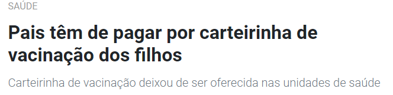
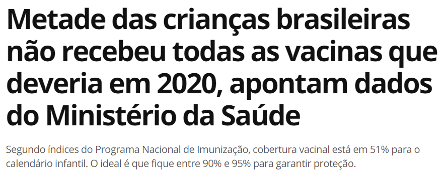

O DESAFIO
O meu objetivo é ser UX Designer e durante o curso UX Unicórnio, juntamente com Karen Castro, Larissa Gialorenço, Rebeca Jacobsen e Thaisa Shalders, escolhemos o desafio de desenvolver um produto que ajude pais e profissionais, do setor da saúde, no acompanhamento da saúde e vacinas de crianças em fase de desenvolvimento, como alternativa digital à Caderneta de Saúde da Criança, esta que é entregue (ou deveria ser) quando a criança nasce e é usada até os 10 anos de idade, para, além do controle das vacinas, também auxiliar no desenvolvimento da saúde e registros de todo seu histórico médico.
O CENÁRIO ATUAL
Após o nascimento da criança, os pais recebem a Caderneta de Saúde da Criança (CSC), que contém cerca de 90 páginas de informações sobre o desenvolvimento da criança, gestação, controle das vacinas e muito mais. Esse documento deve ser utilizado até a criança completar 10 anos de idade, ou seja, os responsáveis pela criança devem manter a Caderneta sempre em mãos, atualizada e conservada durante todos esses anos.
Porém, com uma breve pesquisa, conseguimos ver que nem sempre os pais recebem a CSC do governo e acabam precisando pagar por isso.

Devido ao momento que estamos passando, com muitas fake news e movimentos anti vacina, muitos pais acabam não vacinando suas crianças, o que pode fazer com que doenças que já haviam sido erradicadas, devido as vacinações, voltem a atingir o país.

Apesar dos inúmeros tópicos, gráficos e informações presentes na CSC, os responsáveis, em sua maioria, utilizam-na somente para o controle e atualização das vacinas, ignorando as diversas outras funções que ela oferece.
Considerando a rotina corrida da maioria das famílias com crianças, manter a caderneta atualizada e não perder prazos de vacina pode ser um desafio.
OBJETIVO DO NEGÓCIO
Criar um aplicativo que permita o acesso digital à Caderneta (CSC), incentivando que as famílias, de pelo menos 20% das crianças no Brasil até 2022, estejam utilizando as diversas funções que a CSC Digital oferece — não somente o registro de vacinas.
USUÁRIOS
Criar um aplicativo que permita o acesso digital à Caderneta (CSC), incentivando que as famílias, de pelo menos 20% das crianças no Brasil até 2022, estejam utilizando as diversas funções que a CSC Digital oferece — não somente o registro de vacinas.